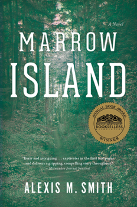

Alexis M. Smith, Marrow Island (2016)
Content warning:
Body horror, death (human death, parental death, and animal death), suicide, hospitalization, natural disasters (earthquakes and wildfires), pregnancy loss, incarceration, serious illness (cancer), serious injury, sexual content
Synopsis
Marrow Island is a novel that explores themes of climate change, ecology, and the interactions between humans and nature. Lucie Bowen, an environmental journalist in her 30s and the novel’s narrator, receives a letter from her childhood friend Katie. Katie invites Lucie to visit Marrow Island, reporting that a colony has formed with the goal of restoring and rehabilitating the polluted soil and water of Marrow Island using mycological (fungi-related) remediation techniques. Lucie, compelled by memories of her father, who died on Marrow Island, and her romantic feelings for Katie, decides to travel to the island.
Upon arriving and spending some time at the colony, Lucie realizes that the colony is keeping many secrets that they will use drastic (and deadly) tactics to keep. Two years later, Lucie relocates to the Malheur National Forest, a remote region of Eastern Oregon. Still working to process her experience on Marrow Island, Lucie explores the dry Oregon forests and mans a fire lookout. In her time there, she experiences the solitude of the remote Oregon wilderness, and grapples with the region’s ever-worsening wildfire season.
Essay
Alexis M. Smith, the author of Marrow Island, shared in an Moss magazine interview that she wanted the novel to “begin and end with landscape in peril.” I chose to include Marrow Island in this guide because of its unique and timely perspective on humans’ interactions with these “landscape[s] in peril,” specifically the Oregon wilderness. Though large sections of Marrow Island are set in the fictionalized, San Juan Islands-based setting of Marrow Island, a significant portion of the novel is set in the Malheur National Forest. For much of the time that Lucie spends in the Malheur, she is alone – her partner, Carie, spends his days at the ranger station, and Lucie occupies her time by wandering along isolated trails in the forest with only her own thoughts for company.
This isolation of the narrator results in a perspective centered on the interaction between Lucie and the Malheur itself. Reading these passages, I felt closely acquainted with these forests, with the scent of the lakes, with the trees and the shape of the land, thanks to Smith’s penchant for rich detail and Lucie’s keen focus on her physical surroundings. Marrow Island allows the reader to be immersed in Oregon as a setting, through Smith’s depictions of Lucie and her relationship with the land around her, making it a novel absolutely fitting under the category of Oregon Literature.
Smith writes in the Moss interview that she “feel[s] like a rare beast here, writing about the Northwest landscape as a living, breathing thing.” The reader sees this in the way that Lucie interacts with the Malheur as though it is another character in and of itself. Lucie seeks out remote areas in the Malheur, such as beside an alpine stream or lake, where she swims, sleeps, or sits; her interior monologue as she does these things is largely made up of descriptions of the wilderness around her. Here, Lucie is approaching a lake on one of her daily hikes: “I smell the water before I see it. Water lifts all the smells around. The mist rises; the vapors carry particles of resin and pollen and fungi spores. As I climb the last fallen tree and the lake comes into view, I connect a low murmur to the sound of it: not waves lapping, but the deeper, subtler sound of movement beneath the surface” (45). Lucie’s feelings, thoughts, and physical experiences throughout her time in the Malheur largely involve these often-intimate interactions between Oregon’s forests and herself.
Along with this focus on the Malheur region, and the significance of Lucie’s relationship with the landscape, Marrow Island also highlights a theme that I find particularly relevant and pressing; wildfires. Wildfires are a major theme of Lucie’s time in the Malheur—her time spent in the fire lookout monitoring for wildfires, Carie’s job as a ranger, which often involves him fighting fires, and, later, a significant wildfire event. Lucie considers the ways in which wildfires have gotten worse in the Pacific Northwest as she’s gotten older as a result of climate change— themes of fire and peril, for animals, humans, and the wilderness are central. Marrow Island draws the reader’s attention to the ways in which climate change is actively in the process of altering landscapes, and, specifically, people’s interactions and relationships with those landscapes. I would consider this focus to be a necessary one in our rapidly changing world.
Author Bio
Alexis M. Smith lives in Portland, Oregon, with her son and wife. She grew up in the Pacific Northwest and attended college in Oregon. Glaciers, a novella set in Portland, mentioned in the Further Reading section, was her debut publication. Her writing largely focuses on the Pacific Northwest, particularly Washington and Oregon. She includes themes of natural disasters specific to the region, including the famed “Big One” earthquake, along with exploring themes of human interactions with climate change - critics have described her novels as “eco-thrillers”. Smith cites Margaret Atwood, James Baldwin, Zora Neale Hurston, and Virginia Woolf as inspirations and influences, according to the previously-mentioned Moss interview. Glaciers was a finalist for the Ken Kesey Award for Fiction, an award that’s presented by Literary Arts as a part of the Oregon Book Awards. The novella was also selected for the World Book Night in 2013.
Smith appears in interviews and Q&As in the Portland area frequently, and has mentioned that she is working on another book.
Further Reading
Alexis M. Smith, Glaciers (2012)
- This novella depicts the life of a Portland librarian.
Diane Cook, The New Wilderness (2020)
- Speculative fiction surrounding a mother and daughter in dystopian Oregon.

Image Source: Thriftbooks.com